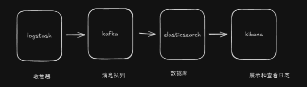
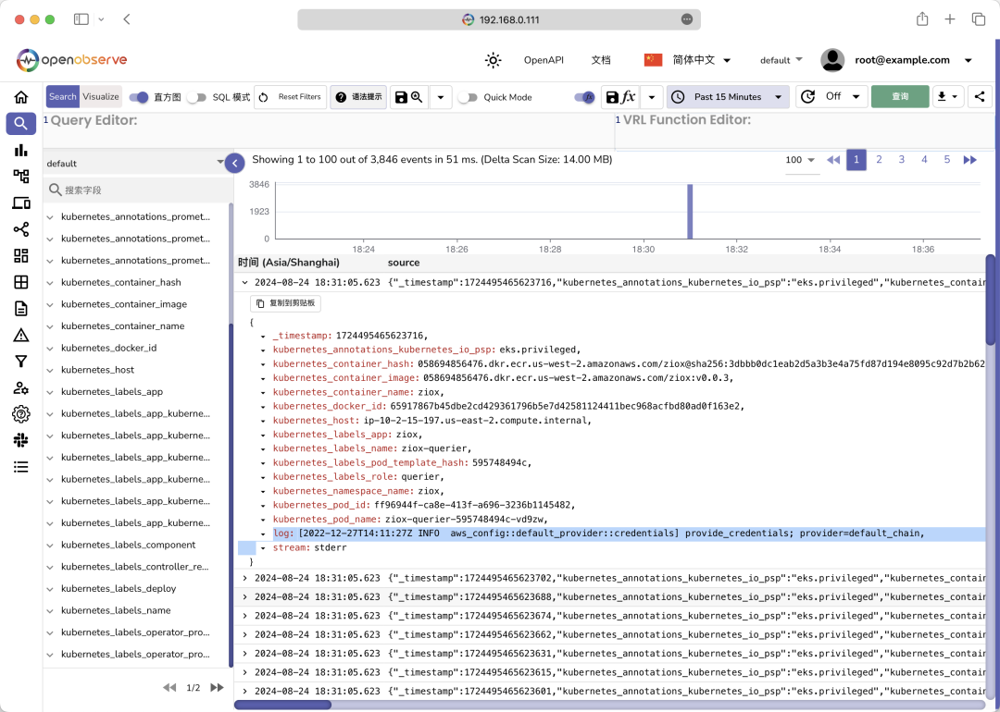
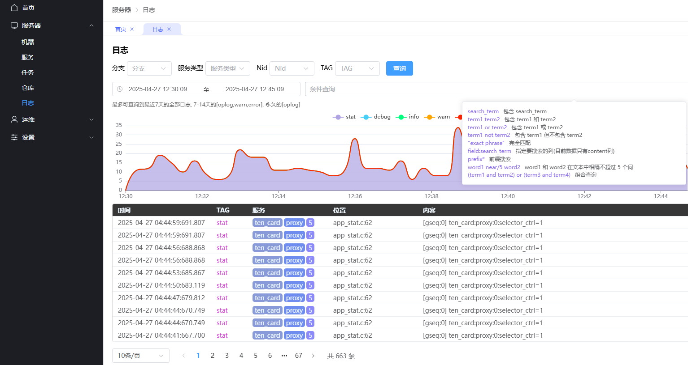
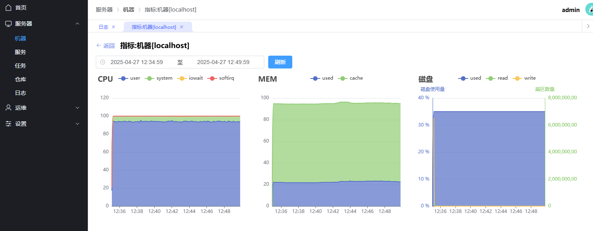
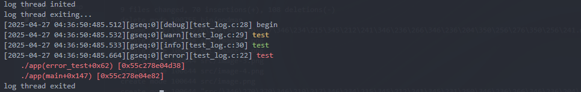

c++
算法
linux
日志和监控系统设计
创建:2025-04-27 23:57
更新:2025-04-27 23:57
日志收集、查询和监控
常见的日志收集系统架构是ELK: Logstash+Kafka+Elasticsearch。

其中kibana可以实现各种数据表格的展示，elasticsearch的日志全文查找，以及监控告警
另外一个简单的替代方案是：OpenObserve

# 我的方案
开源方案虽然强大，按时一般都需要一个运维团队专门做支持。而且游戏开发中存在多个环境, 所以维护成本巨大(光配置都需要巨大的维护精力)。因为本人同样熟悉web前后端开发，所以选择直接使用代码实现自己想要的效果，同时多环境部署无压力，直接启动服务即可，无配置即可完成多环境一致效果。
架构如图：
效果如图:


程序中的日志输出
在游戏服务器中，主要关注的日志包括：错误日志，告警日志(如请求处理缓慢，负载过高，错误数过大等等)，用户行为日志(埋点)。同时需要对日志进行染色，能够查询并直观查看请求在多个服务之间的流转。
其中对于埋点，有些设计中是直接通过网络发送出去。
这里实现一个简单c版本的多线程日志库，能够满足游戏开发的基础需求。做到了以下几点：
- 日志染色，全局的gseq, 方便日志追踪
- 自定义tag, 方便日志收集器区分投递，例如告警日志需要进行告警投递
- 自动识别类型，使用
?替代%d %u %lu ...等，方便编写 - 支持积压限制，避免误写死循环代码，导致日志框架内存暴涨而崩溃
- 足够的性能：
- 加防死循环，队列限制最多积压5000条。 100w输出需要4.2s, 大概每条 4us. 每秒25w
- 不加防死循环，队列积压不限制。100w输出需要319ms. 大概每条 0.3us. 每秒300w. 如果磁盘速度更不上的话，可能积压导致会爆内存
- 支持日志滚动
- 动态链接模式下，支持错误栈输出。方便定位错误日志触发的函数调用路径
#pragma once
struct string_view { // 为了一些没有以\0结尾的字符串使用
const char* buff;
int buff_size;
};
#define _get_type(var) _Generic((var), \
int: 1, \
short: 1, \
double: 2, \
float: 2, \
char*: 3, \
char: 5, \
long long: 6, \
unsigned char: 7, \
unsigned short: 8, \
unsigned int: 8, \
unsigned long long: 9, \
unsigned long: 9, \
struct string_view: 10, \
const char*: 3)
#define _append_seq_1(a) _get_type(a), a
#define _append_seq_2(a, args...) _get_type(a), a, _append_seq_1(args)
#define _append_seq_3(a, args...) _get_type(a), a, _append_seq_2(args)
#define _append_seq_4(a, args...) _get_type(a), a, _append_seq_3(args)
#define _append_seq_5(a, args...) _get_type(a), a, _append_seq_4(args)
#define _append_seq_6(a, args...) _get_type(a), a, _append_seq_5(args)
#define _append_seq_7(a, args...) _get_type(a), a, _append_seq_6(args)
#define _append_seq_8(a, args...) _get_type(a), a, _append_seq_7(args)
#define _append_seq_9(a, args...) _get_type(a), a, _append_seq_8(args)
#define _append_seq_10(a, args...) _get_type(a), a, _append_seq_9(args)
#define _append_seq_11(a, args...) _get_type(a), a, _append_seq_10(args)
#define _append_seq_12(a, args...) _get_type(a), a, _append_seq_11(args)
#define _append_seq_13(a, args...) _get_type(a), a, _append_seq_12(args)
#define _append_seq_14(a, args...) _get_type(a), a, _append_seq_13(args)
#define _append_seq_15(a, args...) _get_type(a), a, _append_seq_14(args)
#define _append_seq_16(a, args...) _get_type(a), a, _append_seq_15(args)
#define _append_seq_n(n, args...) _append_seq_##n(args)
#define _get_types(n, args...) _append_seq_n(n, args)
#define _arg_n(_1, _2, _3, _4, _5, _6, _7, _8, _9, _10, _11, _12, _13, _14, _15, _16, n, ...) n
#define _count_args(args...) _arg_n(args, 16, 15, 14, 13, 12, 11, 10, 9, 8, 7, 6, 5, 4, 3, 2, 1)
static inline int snformat_ignore_(const char* fmt, ...) { return 1; } // ignore unused value error
int snformat_(char* dist, int size, const char* fmt, ...);
#define snformat(dist, size, fmt, args...) snformat_(dist, size, fmt, _get_types(_count_args(args), args))
int log_thread_init();
int log_append(int level, int stack_color, const char* text, int text_size);
void log_safe_exit();
void log_print_level(int level);
#define k_log_level_debug 1
#define k_log_level_info 2
#define k_log_level_warn 3
#define k_log_level_error 4
#define k_log_level_user 5
extern char log_buff_[2048];
extern unsigned long long log_gseq_;
#define log_(level, tag, stack_color, color, fmt, args...) log_append(level, stack_color, log_buff_, snformat(log_buff_, sizeof(log_buff_), "[gseq:?][" tag "][?:?]" color fmt "\033[0m", log_gseq_, __FILE__, __LINE__, ##args))
#define logd(fmt, args...) log_(k_log_level_debug, "debug", 0, "\033[0m", " " fmt, ##args)
#define logi(fmt, args...) log_(k_log_level_info, "info", 0, "\033[32m", " " fmt, ##args)
#define logw(fmt, args...) log_(k_log_level_warn, "warn", 0, "\033[33m", " " fmt, ##args)
#define loge(fmt, args...) log_(k_log_level_error, "error", 31, "\033[31m", " " fmt, ##args)
#define logx(tag, fmt, args...) snformat_ignore_(fmt, ##args)
#ifdef __release__
#undef logd
#undef loge
#undef logx
#define logx(tag, fmt, args...) log_(k_log_level_user, tag, 0, "\033[35m", " " fmt, ##args)
#define logd(fmt, args...) snformat_ignore_(fmt, ##args)
#define loge(fmt, args...) log_(k_log_level_error, "error", 0, "\033[31m", " " fmt, ##args)
// #undef log_
// #define log_(level, tag, stack_color, color, fmt, args...) snformat_ignore_(fmt, ##args)
#endif
-> 日志库实现
#include "log.h"
#define _GNU_SOURCE
#include <memory.h>
#include <pthread.h>
#include <stdarg.h>
#include <stdio.h>
#include <stdlib.h>
#include <sys/stat.h>
#include <sys/time.h>
#include <unistd.h>
static int format_(char* out_buff, int size, const char* fmt, va_list argp) {
int out_size = 0;
int type = va_arg(argp, int);
for (const char* p = fmt; *p != '\0'; p++) {
if (*p != '?') {
out_buff[out_size++] = *p;
continue;
}
if (*(p + 1) == '!') {
out_buff[out_size++] = '?';
p++;
continue;
}
switch (type) {
case 1: {
int arg = va_arg(argp, int);
int n = snprintf(out_buff + out_size, size - out_size, "%d", arg);
out_size += n;
type = va_arg(argp, int);
break;
}
case 2: {
double arg = va_arg(argp, double);
int n = snprintf(out_buff + out_size, size - out_size, "%g", arg);
out_size += n;
type = va_arg(argp, int);
if (out_size > size) {
return 0;
}
break;
}
case 3: {
char* arg = va_arg(argp, char*);
int n = snprintf(out_buff + out_size, size - out_size, "%s", arg);
out_size += n;
type = va_arg(argp, int);
break;
}
case 4: {
int arg = va_arg(argp, int);
if (arg == 1) {
int n = snprintf(out_buff + out_size, size - out_size, "true");
out_size += n;
} else if (arg == 0) {
int n = snprintf(out_buff + out_size, size - out_size, "false");
out_size += n;
} else {
int n = snprintf(out_buff + out_size, size - out_size, "%c", arg);
out_size += n;
}
type = va_arg(argp, int);
break;
}
case 5: {
int arg = va_arg(argp, int);
int n = snprintf(out_buff + out_size, size - out_size, "%c", arg);
out_size += n;
type = va_arg(argp, int);
break;
}
case 6: {
long long arg = va_arg(argp, long long);
int n = snprintf(out_buff + out_size, size - out_size, "%lld", arg);
out_size += n;
type = va_arg(argp, int);
break;
}
case 7: {
unsigned char arg = va_arg(argp, unsigned int);
int n = snprintf(out_buff + out_size, size - out_size, "%u", arg);
out_size += n;
type = va_arg(argp, int);
break;
}
case 8: {
unsigned int arg = va_arg(argp, unsigned int);
int n = snprintf(out_buff + out_size, size - out_size, "%u", arg);
out_size += n;
type = va_arg(argp, int);
break;
}
case 9: {
unsigned long long arg = va_arg(argp, unsigned long long);
int n = snprintf(out_buff + out_size, size - out_size, "%llu", arg);
out_size += n;
type = va_arg(argp, int);
break;
}
case 10: {
struct string_view arg = va_arg(argp, struct string_view);
int n = arg.buff_size > size - out_size ? size - out_size : arg.buff_size;
memcpy(out_buff + out_size, arg.buff, n);
out_size += n;
type = va_arg(argp, int);
break;
}
default: {
va_arg(argp, void*);
type = va_arg(argp, int);
break;
}
}
if (out_size >= size) {
break;
}
}
out_buff[out_size] = 0;
return out_size;
}
int snformat_(char* dist, int size, const char* fmt, ...) {
va_list argp;
va_start(argp, fmt);
int out_size = format_(dist, size, fmt, argp);
va_end(argp);
return out_size;
}
char log_buff_[2048];
char log_stack_buff_[1024];
unsigned long long log_gseq_;
struct log_element {
struct timeval tv;
struct log_element* next;
char* text;
};
struct log_element_list {
struct log_element* head;
struct log_element* tail;
int count;
};
struct log_thread_ {
pthread_cond_t cond;
pthread_mutex_t mutex;
pthread_t thread;
FILE* file;
char file_name[1024];
long long file_time;
long long file_size;
int thread_inited;
int exited;
int level;
int append;
int output;
struct log_element_list list[2];
};
static struct log_thread_ self = {0};
void log_print_level(int level) {
self.level = level;
}
static void exit_close_() {
if (self.exited) {
printf("log thread already exiting...\n");
return;
}
if (self.thread_inited) {
self.exited = 1;
printf("log thread exiting...\n");
pthread_mutex_lock(&self.mutex);
pthread_cond_signal(&self.cond);
pthread_mutex_unlock(&self.mutex);
pthread_join(self.thread, NULL);
if (self.file) {
fclose(self.file);
}
pthread_cond_destroy(&self.cond);
pthread_mutex_destroy(&self.mutex);
printf("log thread exited\n");
}
}
void log_safe_exit() {
exit_close_();
}
static int create_dir_(const char* path) {
struct stat st = {0};
if (stat(path, &st) == -1) {
if (mkdir(path, 0700) == -1) {
return 0;
}
}
return 1;
}
static void log_print_(struct log_element* element) {
time_t tick = (time_t)(element->tv.tv_sec);
char time_str[100];
if (self.file_size > 1024 * 1024 * 500) {
if (element->tv.tv_sec / 86400 == self.file_time / 86400) {
int n = strftime(time_str, 50, "%Y%m%d.%H%M%S", localtime(&tick));
time_str[n] = 0;
char temp[1024];
snformat(temp, sizeof(temp), "./log/?.log", time_str);
struct stat st;
if (stat(temp, &st) == -1) {
rename(self.file_name, temp);
self.file = fopen(self.file_name, "a+");
}
self.file_size = 0;
}
}
if (!self.file || element->tv.tv_sec / 86400 > self.file_time / 86400) {
if (self.file) {
fclose(self.file);
}
create_dir_("./log");
int n = strftime(time_str, 50, "%Y%m%d", localtime(&tick));
time_str[n] = 0;
snformat(self.file_name, sizeof(self.file_name), "./log/?.log", time_str);
self.file_time = element->tv.tv_sec;
self.file = fopen(self.file_name, "a+");
struct stat st;
if (stat(self.file_name, &st) != -1) {
self.file_size = st.st_size;
}
}
int n = strftime(time_str, 100, "%Y-%m-%d %H:%M:%S", localtime(&tick));
time_str[n] = 0;
static char long_text[4096];
int len = snprintf(long_text, 4095, "[%s:%03d.%03d]%s", time_str, (int)(element->tv.tv_usec / 1000), (int)(element->tv.tv_usec % 1000), element->text);
long_text[len] = 0;
self.file_size += len + 1;
fwrite(long_text, 1, len, self.file);
fwrite("\n", 1, 1, self.file);
fflush(self.file);
#ifndef __log_no_printf__
printf("%s\n", long_text);
#endif
free(element);
}
static void* log_thread_(void* arg) {
printf("log thread inited\n");
while (!self.exited || self.list[0].count > 0 || self.list[1].count > 0) {
pthread_mutex_lock(&self.mutex);
while (self.list[self.append].count <= 0 && self.exited != 1) {
pthread_cond_wait(&self.cond, &self.mutex);
}
int tmp = self.append;
self.append = self.output;
self.output = tmp;
pthread_mutex_unlock(&self.mutex);
struct log_element_list* it = &self.list[self.output];
struct log_element* ele = it->head;
while (ele) {
struct log_element* next = ele->next;
log_print_(ele);
ele = next;
}
it->count = 0;
it->head = 0;
it->tail = 0;
}
return 0;
}
int log_thread_init() {
if (self.thread_inited) {
printf("log thread had inited\n");
return 0;
}
memset(&self, 0, sizeof(self));
int result = pthread_mutex_init(&self.mutex, NULL);
if (result != 0) {
printf("int thread mutex failed: %d\n", result);
return 0;
}
result = pthread_cond_init(&self.cond, NULL);
if (result != 0) {
printf("int thread mutex failed: %d\n", result);
return 0;
}
result = pthread_create(&self.thread, 0, log_thread_, 0);
if (result != 0) {
printf("create log thread failed: %d\n", result);
return 0;
}
pthread_setname_np(self.thread, "log_thread");
atexit(exit_close_);
self.thread_inited = 1;
self.output = 1;
self.append = 0;
return 1;
}
#ifdef __GNUC__
#include <execinfo.h>
#endif
int log_append(int level, int stack_color, const char* text, int text_size) {
if (level < self.level) {
return 0;
}
#ifdef __GNUC__
#ifndef __release__
if (stack_color != 0) {
// to get a visualized stack list output when use loge, you need to link with -rdynamic and no -O3.
static char log_stack_buff[4096];
strncpy(log_stack_buff, text, sizeof(log_stack_buff) - 1);
void* array[100];
size_t size = backtrace(array, 100);
char** strings = backtrace_symbols(array, size);
char* stack_info = log_stack_buff;
int k = text_size;
k += snprintf(stack_info + k, sizeof(log_stack_buff) - k, "\033[%dm", stack_color);
for (size_t i = 1; i < size - 2; i++) {
int slen = strlen(strings[i]);
strncpy(stack_info + k, "\n ", sizeof(log_stack_buff) - k);
k += 5;
strncpy(stack_info + k, strings[i], sizeof(log_stack_buff) - k);
k += slen;
}
strncpy(stack_info + k, "\033[0m", sizeof(log_stack_buff) - k);
k += 5;
log_stack_buff[k] = 0;
text_size = k;
text = log_stack_buff;
}
#endif
#endif
while (self.list[self.append].count > 10000) {
usleep(1000); // 限制内存增长速度(框架的输出速度大概2000/ms, 高性能机器应该调整更大), 避免死循环刷日志，当检测到日志慢的时候，则强制线程等待
}
struct log_element* element = (struct log_element*)malloc(sizeof(struct log_element) + text_size + 1);
gettimeofday(&element->tv, NULL);
element->next = 0;
element->text = ((char*)element) + sizeof(struct log_element);
memcpy(element->text, text, text_size);
element->text[text_size] = 0;
if (self.thread_inited) {
pthread_mutex_lock(&self.mutex);
struct log_element_list* it = &self.list[self.append];
if (it->count != 0) {
it->tail->next = element;
it->tail = element;
} else {
it->tail = element;
it->head = element;
}
it->count++;
pthread_cond_signal(&self.cond);
pthread_mutex_unlock(&self.mutex);
} else {
static pthread_t single_thread = 0;
if (single_thread == 0) {
single_thread = pthread_self();
printf("single thread log append\n");
}
if (single_thread != pthread_self()) {
static int single_thread_warnig = 0;
if (single_thread_warnig < 1) {
printf("In multi-threaded environment, please use log_thread_init to initialize the log module first.\n");
single_thread_warnig++;
}
return 0;
}
log_print_(element);
}
return 1;
}
使用：
void error_test(){
loge("test");
}
int main(int argc, char const *argv[]) {
log_thread_init();
log_print_level(k_log_level_debug);
logd("begin");
logw("test");
logi("test");
error_test();
logx("stat", "test");
return 0;
}

额外的，core掉保证输出完毕，需要拦截core型号，调用 log_safe_exit 函数确保输出完毕:
#include <signal.h>
#include <syslog.h>
#include <unistd.h>
#include <stdlib.h>
void handle_core_signal(int sig, siginfo_t* info, void* context) {
static int happened = 0;
if (!happened) { // 避免递归core
happened = 1;
log_safe_exit(); // 确保下发完毕
}
// 恢复默认信号处理
struct sigaction sa;
sa.sa_handler = SIG_DFL;
sigemptyset(&sa.sa_mask);
sa.sa_flags = 0;
sigaction(sig, &sa, 0);
// 重新触发信号（生成核心文件）
kill(getpid(), sig);
}
int main() {
// 设置信号处理
struct sigaction sa;
sa.sa_sigaction = handle_core_signal;
sigemptyset(&sa.sa_mask);
sa.sa_flags = SA_SIGINFO;
sigaction(SIGSEGV, &sa, 0); // 段错误
sigaction(SIGABRT, &sa, 0); // 中止信号
sigaction(SIGFPE, &sa, 0); // 浮点异常
// 模拟触发段错误（解引用空指针）
int* ptr = 0;
*ptr = 42; // 这里会触发SIGSEGV
return 0;
}